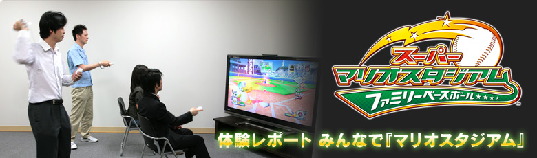
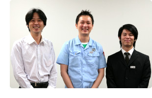
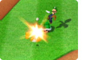
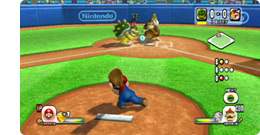
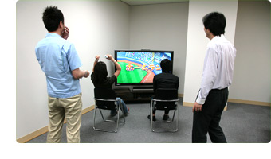
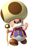
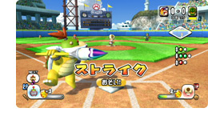

『スーパーマリオスタジアム ファミリーベースボール』は最大４人での対戦が楽しめるとの情報をキャッチ。
でも４人で野球ゲームってどうやるの？ あまり野球ゲームをしたことがない人でも大丈夫？
そんな疑問を胸に抱えつつ、任天堂の開発スタッフと実際にプレイをしながら、複数人プレイの遊び方を教えてもらいました。２対２のチーム戦はヒートアップ！ 結果はいかに？

今回は開発チーム３名の中に私が加わり、プレイヤー４名を２名ずつのチームに分けての対戦プレイとなりました。
今まで野球ゲームでは、１人対コンピュータ、あるいは１人対１人で遊ぶものが多かったのですが、このソフトでは、４人が好きな組み合わせで、「協力プレイ」も「対戦プレイ」も楽しむことができるんです。
このレポートのように、２人対２人での対戦以外にも、難易度設定で手ごわいコンピュータを相手に友だち４人で協力して立ち向かったり、１人対３人といった変則的な対戦プレイを楽しんだりすることも可能。集まった顔ぶれに応じて、違った楽しさを味わえるのではないでしょうか。
さて、まずはコントローラ選びから。複数人で遊ぶ場合は、人数分のＷｉｉiリモコンを用意して、それぞれ好きな持ち方を選択できます。『スーパーマリオスタジアム ファミリーベースボール』では、初めて遊ぶ方にオススメの「Ｗｉｉリモコン（縦持ち）」のほかに、ヌンチャクスタイルや、Ｗｉｉリモコンの横持ちにも対応していて、自分に合った操作方法を選べるのです。
私は超のつく初心者ということで、その中からＷｉｉリモコン縦持ちをチョイスしました。ほかの操作方法なら、バッターボックスでの立ち位置調整や盗塁など、より細かい操作も可能になるそうです(もちろん、別々の操作方法を選択しても一緒に対戦・協力できますよ)。
試合の前に、２つのチームでキャラクターを選び、チーム編成を行います。
それぞれのキャラクターごとに細かい個性が決められていて、私がプレイするチームには、クッパやドンキーをはじめとしたパワーヒッターが勢ぞろい。このタイプのキャラクターは、ややタイミングが合いづらいものの、当たれば打球がどかーんと飛んでいく可能性が大！ 選択したキャラクターの特徴だけでなく、キャラクター同士の相性もチーム編成のポイントになります。キャラクター同士の相性がゲーム中のアクションに影響すると聞き、どんな展開になるのかドキドキしながら、まずは３イニング制でプレイボールです。

こちらのチームが先攻なので、まずは私がバッターを操作。バッターボックスに立つキャラクターは、１番はＡさん、２番はＢさんというように、同じチームのプレイヤーが交替で操作するので、すぐに自分の出番が回ってきます。
Ｗｉｉリモコンを縦持ちで使えば、テイクバックして（バットを引いて）、ひょいっと振るだけでスイングできちゃいます。本当にカンタンだ〜と、初めてプレイする私もひと安心。

同じチームのプレイヤーがバッティングをしていても、やることはあります。現在のバッターと次の打者との相性が良い場合、打球を捕られないようにする「おじゃまアイテム」を使用できる…というわけで、協力プレイ中は「おじゃまアイテム」の発射は次のバッターの役目。味方の打球がヒットになるかどうかの重要な分かれ目です。

ピッチングも同じで、打者が変わればピッチャーも交代しながら投げるので、手持ちぶさたになる心配はゼロ。ですが、一生懸命投げますが、開発スタッフが相手ということで、やっぱり打たれてしまいます…。けれど、がっかりするのはちょっと待って。打たれた打球も、チームの連携ひとつで結果が変わります。野手はチームのみんなで動かすので、プレイヤー同士が息を合わせて連携すれば、一転、アウトを狙うこともできるのです。
タイミングを合わせることにも慣れてきたあたりで、密かにテクニカルな方法を狙い始めます。テイクバックで力を溜めて打つ「チャージショット」でパワフルな打撃を見せたり、タイミングを合わせて「チャージボール」を投げて相手チームを翻弄したり！
「おじゃまアイテム」で相手の守備の邪魔をし、高い打球を２人の連続ジャンプでキャッチする「なかよしジャンプ」で協力プレイの楽しさをいろいろと味わいながらも、さらに試合は続きます。だいぶ余裕が出てきた頃には、Ｗｉｉリモコンを左右にひねる変化球を投げ分けられるようになり、Ａボタンで投げるチェンジアップも効果的な使い方が分かるようになってきました。ゲームを始めたばかりでも、ちょっとしたテクニシャン気分です。

試合も佳境に差し掛かり、私が立ったバッターボックスで打った球は高々と上がり、飛んでいく先は外野スタンド。「これもしかしてホームラン!?」とガッツポーズを作ろうとしたら、外野を守っていた相手チームのピーチとデイジーが「なかよしジャンプ」で大ジャンプ！! これは捕られた!? …と息を呑んだら、プレイヤー同士の息が合わずにコロッと失敗。あえなくボールはスタンドに落ち、ホームラン！ 思わずバンザイも飛び出します。
このように、「なかよしジャンプ」も毎回成功するわけではないそう。「プレイヤー同士の息が合うかどうかですからね」とのことでした。キャラクター同士以外にもプレイヤー同士の呼吸も試されるというわけです。


こちらの優勢でもうすぐ試合が終わるかと思ったところで、相手チームがピッチャー交代。キノじいを送り出してきました。
「キノじいはリリーフに使うんです」とのことですが、理由は謎……でもすぐに判明しました。
投球が、ものすごく、遅い！
テイクバックして打とうとしても、ボールがフワフワしすぎてタイミングが合わせられないんです。今まで速球に慣れてきたところでのスローボールは曲者。こんな風に、遊ぶうちにキャラクターの個性が分かっていけば、このゲームはもっと楽しく遊べるはず。
３イニング制のゲームを３回、ちょうど普通の野球と同じ回数を戦った結果は、２勝１敗で私たちの勝利。初心者ながらも精一杯のプレイをしました。途中までは上手く操作しようと必死でしたが、再び「なかよしジャンプ」を失敗した相手チームの息の合わなさ(？)に思わず笑ってしまったこともあり、リラックスしたプレイはホームラン２本とヒット数本を生み出す結果となりました(いえ、三振も何度か…)。
嬉しい成績で最後は楽しくゲームセット。勝てばやっぱりいい気分です。プレイヤーもそれなりに動くので、いい汗をかきつつ終わることができました。
試合終了後はインタビューに続きます。